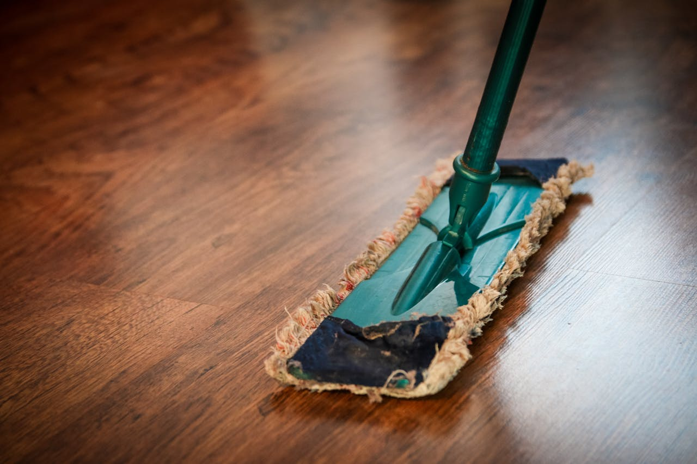

Seasonal resets • First-time cleanings
Deep Cleaning
Detailed scrubbing from ceiling fans to baseboards to reset your home before guests, events, or the change of seasons.
The deep clean difference
We reach the details neglected in day-to-day upkeep. Extra time is allocated for build-up removal, hand-wiping, and ladder work (within safety limits).
- Hand-wipe baseboards, trim, and doors throughout the home
- Detail dust blinds, ceiling fans, vents, and light fixtures
- Degrease kitchen surfaces and detail appliance exteriors
- Scrub grout lines, shower glass, and bathroom fixtures
- Spot clean walls, switch plates, and banisters

Deep cleaning checklist
Every deep clean includes the standard checklist plus these time-intensive additions.
Living areas and bedrooms
- Vacuum upholstered furniture and under cushions
- Hand-wipe doors, trim, window sills, and baseboards
- Detail dust artwork, frames, and decorative shelving
- Clean interior window glass reachable without extension
- Polish mirrors, glass inserts, and railings
Kitchen transformations
- Degrease stove hood, backsplash, and cabinet hardware
- Hand-wash cabinet fronts and appliance gaskets
- Detail microwave inside and outside
- Clean behind small appliances and sanitize counters
- Optional: interior oven, fridge, and pantry wipe-out
Bathrooms and laundry
- Scale removal on shower heads, fixtures, and soap scum zones
- Detail scrub tile, grout, and glass enclosures
- Sanitize cabinets, vanities, and shelving
- Polish chrome and stainless elements to a streak-free finish
- Wipe laundry room appliances, counters, and utility sinks
Finishing touches
- Edge vacuum carpets and mop hard floors with detail attention
- Dust and clean light fixtures and recessed lighting trims
- Clean interior glass doors and sliders
- Apply protective stainless or wood polish where appropriate
- Leave a completion checklist with before/after notes

Perfect for moves and makeover projects
Book a deep clean before listing a property, staging a home, or bringing in contractors. We can coordinate with organizers, painters, or stagers for a smooth hand-off.
- Flexible scheduling for vacant and occupied homes
- Project updates with photos by request
- Discount when paired with recurring maintenance service
- Extend the visit to include garages, basements, or sunrooms
Deep cleaning FAQs
How long does a deep cleaning take?
Most deep cleans take 4 to 6 labor hours depending on home size and build-up. Large homes or special requests may require multiple cleaners.
Do I need to be home?
Not at all. Provide access instructions and we will text when we arrive and when we leave. We can also lock up and set alarms on your behalf.
Can I add appliance interiors or windows?
Yes. Let us know during booking so we can reserve extra time for inside oven, fridge, windows, or additional projects.
Is a deep clean required before recurring service?
If it has been more than 60 days since your last professional cleaning, we recommend starting with a deep clean so recurring visits run faster and cost less.